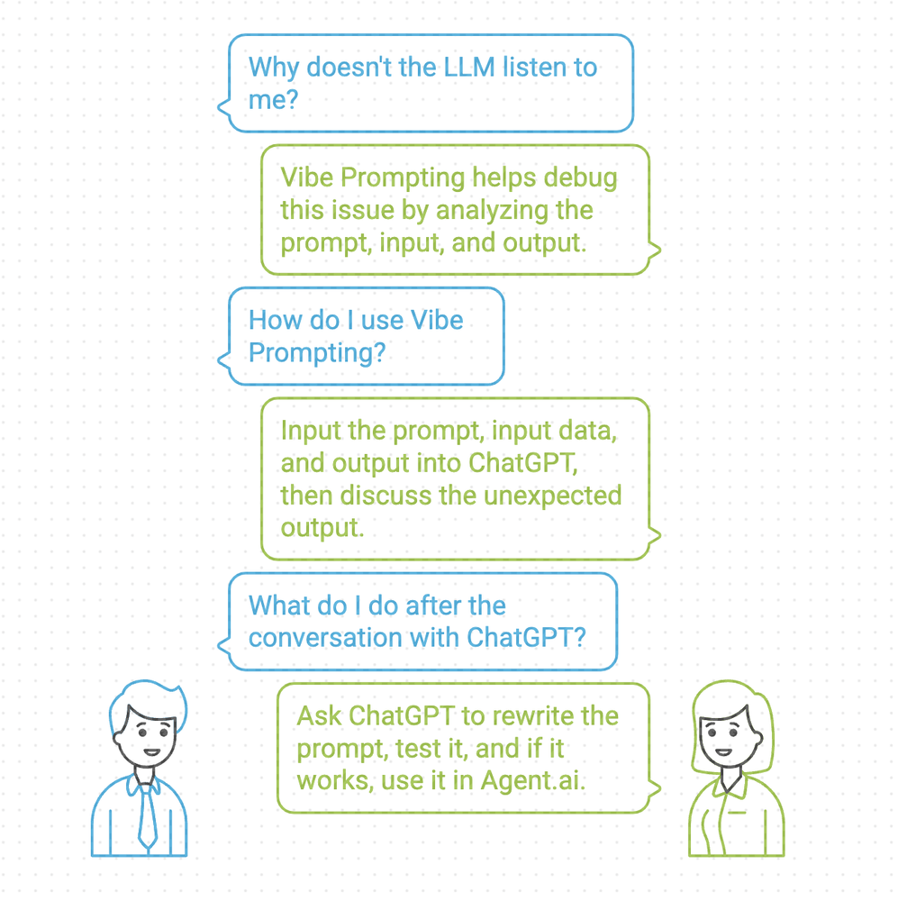

Vibe Prompting and Agent Debugging

Vibe Prompting - A Two Part Series is sponsored by Agent.ai - Discover, connect with and hire AI agents to do useful things.
This is a follow on to my earlier article on Vibe Prompting and Agent Building where I borrowed from Andrej Karpathy's tweet on Vibe Coding.
While I have found this approach, of leveraging ChatGPT to generate the prompts I use to build my agents extremely useful, it becomes even more valuable to debug my agents. For those that spend a lot of time building agents, getting the agent to generate the output exactly the way you want it, every time is a time consuming process. There is a lot of iteration and trial and error.
Getting my agent 80% working is easy, getting from 80% to 98% requires a lot of blood sweat and tears.
Often you have no idea why the LLM just does not listen to you and this is where Vibe Prompting for debugging is invaluable. The process is quite simple, I take the prompt, the input to the prompt, the output of the execution of the prompt and dump it all into ChatGPT and then have a conversation with ChatGPT on why the output is not what I expected and then ask it to rewrite the prompt to generate the output I want. Then I test it out in ChatGPT and once it looks good I plop it back into Agent.ai

So going back to our earlier example - Building an agent that will analyze any CSV file, I generated all my prompts in ChatGPT then built the agent in Agent.ai and then ran the agent and as expected it did not work. The output was off.
So here is how I debug my agents using ChatGPT.
STEP 1 : My Question to ChatGPT
Basically, my prompt is supposed to ask Clarifying Questions about the data set and my version of the prompt was generating extremely generic questions. If I uploaded Fitbit data or P&L data it asked similar questions as opposed to being specific to the data that was. being uploaded.
STEP 2 : Provide the prompt
STEP 3 : Share the output that I am not happy with. You can see that the clarifying questions that my prompt generated is too generic. It looks like it is not generating these questions based on the dataset I am uploading.
STEP 4 : ChatGPT analyzes all this information and then explains to me why the output is off and what should be done to fix it.
STEP 5 : It generates a new prompt that I then have it rerun.
STEP 6 : I validate the output and if it looks good. You can how these questions are way more specific to the dataset I uploaded (Manufacturing P&L). Now that I like the output I update it in Agent.ai
You can see how different this output is from what it had initially generated.
What I have realized is that ChatGPT knows how to talk to ChatGPT (prompting) way better than I know how to talk to ChatGPT, so why not have it come up with the prompt
So how did this all end up -
Here is a video where I go through this entire process.
Here is the agent in Agent.ai that you can test.
This is the dataset from Kaggle that I used.
Here is an output that I get when analyzing website visitors (uploaded as CSV).

So my call to action for anyone who has got this far is to go sign up for Agent.ai and start building some agents using Vibe Prompting. What are you waiting for? ChatGPT will generate all your prompts for you.